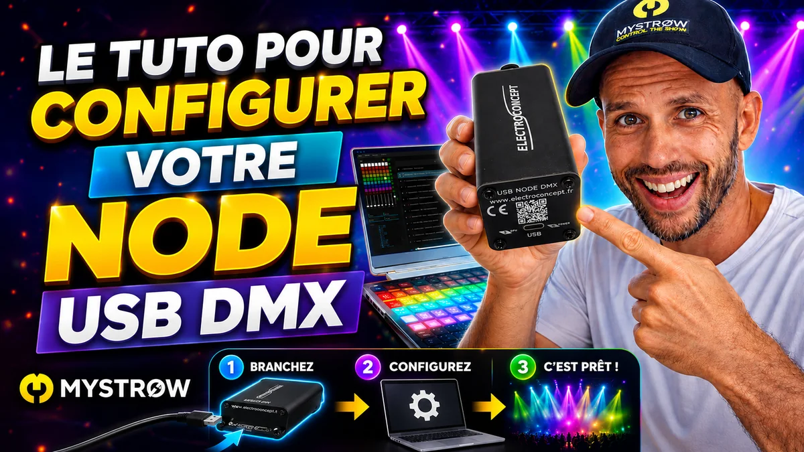

Brancher sa sortie DMX
Node Art-Net & interfaces USB
MyStrow parle à vos projecteurs par une seule et même fenêtre : Connexion → Sortie DMX. Derrière, deux familles de matériel — un Node Art-Net (réseau) ou une interface USB/DMX (ENTTEC, Eurolite, DMXKing, OPTO…). Ce guide couvre les deux, du choix du boîtier au premier fader qui monte, plus tout ce qui coince habituellement en route.

01 Quelle interface choisir ?
Un logiciel de lumière ne parle pas DMX tout seul : il lui faut un boîtier qui transforme les données de l'ordinateur en signal DMX512 sur XLR. MyStrow en gère deux familles, et le choix se résume à une question : un seul univers à courte distance, ou plusieurs univers / une machine loin de la scène ?
| Type d'interface | Exemples | Univers | Stabilité | Pour qui |
|---|---|---|---|---|
| Interface USB à microcontrôleur Le boîtier fabrique lui-même le signal DMX. |
ENTTEC DMX USB Pro Eurolite USB-DMX512 PRO MK2 |
1 | Excellente timings gérés par le boîtier |
Le choix par défaut : petit rig, bar, mariage, home studio. Rien à configurer. |
| Adaptateur USB « open » C'est l'ordinateur qui cadence le signal. |
ENTTEC Open DMX USB OPTO OPEN DMX (ElectroConcept) DMXKing UltraDMX Micro |
1 | Bonne dépend de la machine |
Budget serré, dépannage, deuxième interface de secours. |
| Node Art-Net Passe par le réseau (Ethernet ou USB-réseau). |
Node USB DMX ElectroConcept ENTTEC ODE Mk2 DMXKing eDMX1/eDMX2 PRO |
1 à 4 selon le modèle | Excellente longues distances |
Plusieurs univers, lyres, régie éloignée du plateau, installations fixes. |
En pratique : si vous débutez et que vous avez moins d'une centaine de canaux, prenez une interface USB à microcontrôleur — vous branchez, vous choisissez le port, vous cliquez sur Connecter. Le Node devient rentable dès que vous ajoutez des lyres (16 à 30 canaux pièce : on sature un univers vite) ou que le câble XLR devrait faire 40 m jusqu'à la régie.
Node Art-Net
Le boîtier reçoit de l'Art-Net par le réseau et le convertit en DMX sur ses sorties XLR. Il demande un réglage réseau une fois pour toutes.
- Jusqu'à 4 univers sur un seul boîtier
- Longueur de câble réseau, pas de contrainte USB
- Aiguillage univers → sortie physique dans MyStrow
Interface USB/DMX
Un simple câble USB d'un côté, du XLR de l'autre. Aucune configuration réseau, MyStrow détecte le protocole du boîtier tout seul.
- Branché → port COM → Connecter
- Compatible Windows et macOS
- Diagnostic intégré en cas de doute
Vous n'avez pas encore de boîtier ? La page matériel liste les modèles testés avec MyStrow, du plus simple au node 4 univers.
02 Comment le signal circule
Comprendre la chaîne évite 90 % des heures perdues à chercher une panne : quand rien ne s'allume, il suffit de savoir à quel maillon regarder.
Trois notions suffisent pour la suite :
Le canal
Une valeur de 0 à 255. Un PAR LED simple en consomme 5 (dimmer, R, V, B, strobe), une lyre 16 ou plus.
L'univers
Un paquet de 512 canaux = une ligne DMX physique. Rig plus gros ? Il faut un deuxième univers, donc une deuxième sortie.
L'adresse
Le canal de départ réglé sur le projecteur. Elle doit correspondre exactement au patch de MyStrow.
Art-Net
Le DMX transporté sur le réseau, en UDP sur le port 6454. C'est ce que MyStrow émet vers un node.
À retenir : MyStrow réémet en permanence l'intégralité de l'univers, plusieurs dizaines de fois par seconde — c'est le fonctionnement normal du DMX. Un projecteur qui « garde » une couleur alors que vous avez tout coupé n'est donc jamais un projecteur qui bug : c'est la sortie qui ne lui parle plus.
03 Configurer un Node Art-Net
La procédure détaillée ci-dessous est celle du node USB ElectroConcept (« USB NODE DMX »), le plus répandu chez les utilisateurs de MyStrow. Le principe reste le même sur tout autre node (ENTTEC ODE, DMXKing eDMX…), seul l'utilitaire de configuration change : régler le node en Art-Net, lui donner une adresse IP, mettre le PC sur le même plan d'adressage.
Vérifier que c'est bien un node
Sur les boîtiers ElectroConcept, l'inscription se trouve juste au-dessus de la prise USB. « USB NODE DMX » → c'est bien un node Art-Net, continuez ici. « OPTO OPEN DMX » → ce n'est pas un node mais une interface USB/DMX classique : allez directement à la voie B.
Branchez le boîtier et vérifiez qu'il est alimenté (LED active).
Régler le node dans DMX TOOLS
La configuration passe par l'utilitaire web d'ElectroConcept, boîtier branché et alimenté. Onglet DMX Parameters : DMX Mode : OUT · Universe OUT : 0 · Universe IN : 1 · OUT Mode : Fixed · FPS Fixed : 40.
« OUT » signifie que c'est le PC qui envoie vers les projecteurs ; « Universe OUT 0 » correspond au premier univers émis par MyStrow.
Donner une adresse au node
Onglet Network Parameters : Node IP : 2.0.0.15 (le boîtier sort d'usine en 2.0.0.1, il faut le changer), DHCP IP : 2.0.0.2, Netmask : 255.0.0.0. Validez, puis débranchez et rebranchez l'USB pour que le node reparte sur sa nouvelle adresse.
2.0.0.15 est l'adresse que MyStrow vise par défaut : en la respectant, vous n'aurez rien à saisir dans le logiciel.
Mettre le PC en IP fixe
Une IP fixe est toujours plus fiable qu'une attribution automatique. Propriétés de la carte réseau qui apparaît quand vous branchez le node → Protocole Internet version 4 (TCP/IPv4) → Propriétés → « Utiliser l'adresse IP suivante » : 2.0.0.1, masque 255.0.0.0, passerelle vide.
MyStrow sait le faire à votre place : bouton ⚙ Configurer la connexion réseau dans la fenêtre de sortie DMX.
Connecter dans MyStrow
Connexion → Sortie DMX, onglet Sortie Node. Le statut passe au vert quand le boîtier répond ; cliquez sur Connecter. Rien d'autre à saisir : la cible 2.0.0.15 est le réglage par défaut.


DMX TOOLS — ElectroConcept
L'utilitaire de configuration en ligne du node. Boîtier branché et alimenté en USB avant d'ouvrir la page.
Ouvrir DMX-tools.electroconcept.fr ↗

Wi-Fi : à éviter. L'Art-Net supporte mal les pertes de paquets et la latence variable d'un réseau sans fil — on obtient des lumières qui « accrochent ». Reliez le node en filaire, et gardez le Wi-Fi pour le contrôle à distance depuis une tablette.
04 Configurer une interface USB/DMX
Pas de réseau, pas d'adresse IP : on branche le boîtier, on choisit son port et on connecte. MyStrow gère les interfaces les plus courantes du marché et choisit tout seul le protocole de communication adapté au boîtier détecté — vous n'avez pas à savoir si le vôtre passe par un port série virtuel ou par le pilote FTDI direct.
Brancher, puis ouvrir la fenêtre
Branchez l'interface avant d'ouvrir la fenêtre, puis Connexion → Sortie DMX et cliquez sur l'onglet 🔌 Sortie DMX USB.
Choisir son modèle dans « Interface »
Le menu propose : Eurolite USB-DMX512 PRO (MK2), ENTTEC DMX USB Pro, ENTTEC Open DMX USB, OPTO OPEN DMX (ElectroConcept), DMXKing UltraDMX Micro et Autre interface USB-DMX. Si votre boîtier n'est pas listé nommément, « Autre interface USB-DMX » convient à la grande majorité des clones à base de puce FTDI.
Sélectionner le port
Déroulez Port COM et prenez celui de l'interface. Le bouton ↺ relance la détection si vous venez de brancher le boîtier ou d'installer un pilote. Aucun port listé ? Le pilote USB du boîtier n'est pas installé — voir le dépannage.
Connecter
Cliquez sur 🔌 Connecter : le voyant passe au vert et la sortie DMX démarre immédiatement. C'est ce bouton — et lui seul — qui bascule réellement la sortie du logiciel sur l'USB. Ouvrir l'onglet ne suffit pas.
ENTTEC Pro & Eurolite MK2
Ces boîtiers embarquent un microcontrôleur qui fabrique le signal DMX à cadence régulière : c'est ce qui se fait de plus propre en USB, et le plus recommandé en prestation, Windows comme macOS. La LED de l'interface passe au vert quand la sortie est active.
Open DMX, OPTO OPEN DMX, clones FTDI
Ici c'est l'ordinateur qui génère le timing du signal, à travers la puce FTDI. MyStrow attaque la puce en direct pour tenir une cadence stable. Ces boîtiers marchent très bien, mais sont plus sensibles à la machine et aux pilotes installés.
Un seul logiciel à la fois sur le boîtier. Une interface USB/DMX ne peut être ouverte que par un programme : si un utilitaire du fabricant, un autre logiciel de lumière ou une seconde fenêtre de MyStrow tient le port, la sortie devient erratique (projecteurs qui clignotent, « port not open »). Fermez tout le reste avant de connecter.
En cas de doute, le bouton 🔬 Diagnostic de la fenêtre teste le port et signale les problèmes classiques (port occupé, pilote absent, boîtier muet).
05 Univers et aiguillage des sorties
Un univers = 512 canaux = une ligne XLR. Dès que le rig dépasse cette limite — typiquement en ajoutant des lyres — il faut répartir les projecteurs sur plusieurs univers, ce qui suppose un node à plusieurs sorties.
Quand un node est connecté, la fenêtre de sortie DMX affiche un tableau Aiguillage des sorties : pour chaque prise physique du boîtier (DMX 1 à DMX 4), vous choisissez quel univers y est envoyé, ou Désactivé pour éteindre la sortie.
| Cas de figure | Réglage | Résultat |
|---|---|---|
| Installation standard | DMX 1 ← Univers 1, DMX 2 ← Univers 2, etc. | Chaque sortie porte son propre univers. |
| Doubler une ligne (miroir) | Deux sorties sur le même univers | Le même signal part sur deux prises : pratique pour alimenter deux côtés de scène sans splitter. |
| Isoler une ligne pendant les réglages | La sortie sur Désactivé | La prise n'émet plus rien, les autres continuent normalement. |

Le patch reste maître. L'aiguillage ne change pas l'adressage : c'est dans le patch de MyStrow que chaque projecteur reçoit son univers et son adresse de départ. Deux appareils dont les plages d'adresses se chevauchent réagiront ensemble quoi que vous fassiez ici — la fonction ⚡ Auto-adressage du patch règle ce cas en un clic.
06 Vérifier que le DMX sort vraiment
Un statut vert veut dire « le boîtier est ouvert », pas « vos projecteurs reçoivent quelque chose ». Le seul test qui compte est physique, et il tient en quatre points.
- Montez le master et le fader du groupe concerné : sans eux, tout le reste sort à zéro.
- Envoyez un plein feu blanc sur un seul projecteur, celui qui est le plus près de l'interface.
- Laissez le test tourner plusieurs secondes. Un projecteur a besoin de recevoir plusieurs trames avant d'allumer ; une impulsion d'une demi-seconde peut passer totalement inaperçue.
- Regardez la LED de réception du projecteur ou du boîtier : elle clignote dès qu'un signal DMX valide arrive, même si l'adressage est faux.
Si la LED clignote mais que rien ne s'allume : le signal arrive, le problème est en aval — adresse du projecteur, univers, ou mode DMX du projecteur différent de celui déclaré dans le patch. Si elle ne clignote pas : le problème est en amont — interface, câble, ou sortie non connectée dans le logiciel.
07 Câblage DMX : les règles qui évitent les pannes
Beaucoup de « bugs logiciels » sont en réalité des problèmes de ligne. Le DMX512 est un bus série, avec des règles simples mais strictes.
En guirlande, jamais en étoile
Interface → projecteur 1 → projecteur 2 → … Un répartiteur passif (doubleur XLR) crée des réflexions et fait scintiller la ligne. Pour partir en plusieurs directions, il faut un splitter DMX actif ou une deuxième sortie de node.
Terminaison 120 Ω
Un bouchon de terminaison sur la dernière machine de la ligne. Sans lui, ça marche… jusqu'au jour où ça scintille sans raison, en général le soir de la presta.
Câble DMX, pas câble micro
Même prise XLR, impédance différente : 110 Ω pour le DMX, contre 50 à 75 Ω pour un câble micro. Ce dernier dépanne sur 3 m et devient très aléatoire au-delà.
32 appareils, ~300 m
Les limites de la norme par ligne. Au-delà : splitter actif. Éloignez aussi le DMX des câbles de puissance, qui lui injectent du bruit.
08 Dépannage
Les symptômes les plus fréquents, du plus courant au plus rare, avec la cause à vérifier en premier.
| Symptôme | Cause la plus probable | Solution |
|---|---|---|
| Rien ne s'allume, aucun voyant ne bouge | Sortie jamais connectée, ou master / faders à zéro. | Rouvrir Connexion → Sortie DMX, vérifier l'onglet actif et cliquer sur Connecter. Puis monter le master. |
| Tout est vert dans le logiciel, mais les projecteurs sont morts | La sortie active n'est pas celle du matériel branché : le logiciel émet en Art-Net alors que le boîtier est en USB (ou l'inverse). | Vérifier quel onglet est actif dans la fenêtre de sortie, et reconnecter sur le bon. Un test qui ouvre sa propre sortie peut être vert alors que l'application n'émet rien. |
| Aucun port COM proposé | Pilote USB de l'interface absent, ou câble USB de charge (sans fils de données). | Installer le pilote du fabricant (puce FTDI dans la plupart des cas), rebrancher, puis ↺ pour rescanner. Essayer un autre câble et un port USB à l'arrière du PC. |
| Les projecteurs clignotent ou strobent tout seuls | Deux programmes écrivent sur le même boîtier, ou une ligne DMX non terminée. | Fermer tout autre logiciel de lumière et les utilitaires du fabricant. Ajouter un bouchon 120 Ω en fin de ligne. |
| Un projecteur réagit quand j'en bouge un autre | Plages d'adresses qui se chevauchent. | Réadresser : chaque appareil doit démarrer après la fin du précédent. Le ⚡ Auto-adressage du patch le fait automatiquement. |
| Node : statut rouge, boîtier non détecté | Carte réseau du PC hors du plan d'adressage du node, ou pare-feu. | Carte réseau en 2.0.0.1 / 255.0.0.0 (bouton ⚙ Configurer la connexion réseau), et autoriser MyStrow dans le pare-feu Windows pour les réseaux privés. |
| Node : connecté, mais une seule sortie fonctionne | Aiguillage : la sortie est sur « Désactivé » ou pointe sur un univers vide. | Dans le tableau Aiguillage des sorties, remettre chaque prise sur l'univers voulu. |
| Les couleurs ne correspondent pas | Mode DMX du projecteur différent du profil choisi dans le patch (ex. appareil en 8 canaux, patché en 5). | Régler le même mode des deux côtés — sur le menu du projecteur et dans son profil MyStrow. |
| Ça marchait hier, plus aujourd'hui | Boîtier rebranché sur un autre port USB : le numéro de port COM a changé. | Rouvrir la fenêtre, ↺, resélectionner le port, Connecter. Reprendre le même port USB à chaque fois évite le problème. |
Toujours bloqué ? Passez par le bouton 🔬 Diagnostic de la fenêtre de sortie DMX : il teste le port, le pilote et l'émission réelle. Notez son message et écrivez-nous depuis la page contact — ou rejoignez le Discord, la communauté connaît généralement le boîtier que vous avez entre les mains.
09 FAQ
Quelle interface choisir pour débuter ?
Une interface USB à microcontrôleur (ENTTEC DMX USB Pro, Eurolite USB-DMX512 PRO MK2) : rien à configurer côté réseau, on choisit le port et on connecte. Un Node Art-Net devient intéressant dès qu'il faut plusieurs univers, de longues distances, ou une machine éloignée de la scène.
Combien de projecteurs par univers ?
Un univers contient 512 canaux : environ 100 PAR LED en 5 canaux, mais seulement une trentaine de lyres en 16 canaux. Au-delà, il faut un deuxième univers — donc un node à plusieurs sorties.
Faut-il un switch ou un routeur pour un node ?
Non. Un câble Ethernet direct entre l'ordinateur et le node suffit (ou le câble USB pour un node alimenté en USB). Il faut simplement que la carte réseau du PC soit sur le même plan d'adressage que le node : 2.0.0.1 / 255.0.0.0 pour un node en 2.0.0.15.
MyStrow envoie-t-il de l'Art-Net ou du sACN ?
De l'Art-Net, en UDP sur le port 6454. La plupart des nodes gèrent les deux protocoles : il suffit de régler le boîtier en Art-Net dans son utilitaire de configuration.
Ça fonctionne sur Mac ?
Oui, en Art-Net comme en USB. Sur macOS, les interfaces à microcontrôleur (ENTTEC DMX USB Pro, Eurolite MK2) restent les plus fiables, puisque le boîtier génère lui-même les timings du signal. Les adaptateurs de type Open DMX fonctionnent également mais dépendent davantage de la machine.
Puis-je utiliser deux interfaces en même temps ?
MyStrow pilote une sortie à la fois. Pour plusieurs univers simultanés, utilisez un node multi-sorties et son tableau d'aiguillage plutôt que plusieurs boîtiers USB.
Faut-il refaire la configuration à chaque spectacle ?
Non : le choix de l'interface, le port et l'aiguillage sont mémorisés. Il suffit de rebrancher le matériel avant de lancer le logiciel. Seul un changement de port USB peut demander de resélectionner le port.
Le matériel est prêt ?
Passez à la suite : patcher vos projecteurs, puis programmer vos premières séquences.